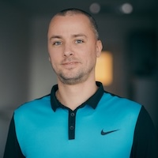

Marek Toth
- Location: Kosice, Slovakia
- Phone: +421 907 345 554
- Email: marek_toth@icloud.com
Profile
I’m a software developer, systems engineer, and agile methodologies enthusiast with more than 18 years of
project experience in developing software for medical devices. Throughout the years, I worked on multiple
projects within the medical ultrasound domain. My preferred programming languages are C# and C++, though I
have extensive experience with the former.
As my career progressed, my focus shifted from coding to having greater responsibility as a team's scrum
master, followed by a role as a product owner. This role was later complemented by people management duties.
After a few years, I took a break from leadership roles to gain substantial experience in systems
engineering. My most recent role was a combination of team leader, product owner, and clinical collaboration
representative.
I spent my entire career in a highly agile-focused environment which transformed from pure Scrum, to
incorporating KANBAN and eventually SAFe.
I view myself as a person with robust leadership and organizational skills. I have strong analytical and
problem-solving abilities and am always seeking new knowledge. Effective communication and interpersonal
skills, alongside working both independently and collaboratively, are my key strengths.
Outside of work, I'm passionate about my family (married with two sons), sports (basketball, badminton, and
mountain biking), video games (playing, designing, and creating), and reading.
Education
- University: Technical University in Kosice
- Program: Masters in Artificial Intelligence, graduated with honours
- Date: 2002 - 2006
- Training: Implementing SAFe (Scaled Agile)
- Date: 2018
- Certification: Certified Professional for Requirements Engineering (IREB)
- Date: 2018
- Certification: Certified Product Owner (Scrum Alliance)
- Date: 2016
- Certification: Certified Professional for Software Architecture (iSAQB)
- Date: 2015
- Certification: Certified Scrum Master (Scrum Alliance)
- Date: 2014
Key Skills
Microsoft .NET 3.5 and above, Microsoft Visual Studio 2012 and above, Microsoft Team Foundation Server 2012 - 2018, Azure DevOps Server 2019 and above, Microsoft Unit Testing Framework, Synopsys Coverity, StyleCop, C#, C++, MATLAB, Open Inventor, Figma, IBM Rational ClearCase, Borland Caliber, VersionOne, NUnit, NCover, Microsoft FxCop, Unity, Cocos2d
Professional Experience
- Company: Siemens Healthcare
- Project: ORIGIN
- Date: January 2022 - December 2024
- Description: Software development and ultrasound engineering for next generation cardiovascular medical ultrasound system for US customer.
- Roles: Team Leader, Product Owner, Clinical Collaboration Representative, Ultrasound Engineer, Software Developer
- Responsibilities: I led and coordinated three international development teams - one software team, one team focusing on low level rendering improvements and a team of ultrasound engineers. As their product owner, my primary responsibility was gathering and analyzing requirements from diverse stakeholders, prioritizing team backlogs and planning accordingly. With my software development background, I supported the software development team. Furthermore, I collaborated with both local and international clinical specialists and Key Opinion Leaders (KOLs), collecting their early feedback and additional inputs. Additionally, I also collaborated with the University in Zilina to integrate ultrasound engineering into as of its study programs.
- Technologies: Microsoft Team Foundation Server 2018, Azure DevOps 2019, Microsoft .NET (various versions), Microsoft Visual Studio (various versions), MATLAB, Open Inventor, Figma, C#, C++, JSON
- Company: Siemens Healthcare
- Projects: Multiple
- Date: September 2019 - December 2021
- Description: Systems engineering for multiple medical ultrasound systems for US customer.
- Role: Systems Engineer
- Responsibilities: My primary responsibility was to define and decompose requirements for diverse imaging features distributed across multiple ultrasound medical systems, working closely with development teams. I ensured that deliverables for various milestones were ready on time and in quality, which involved the creation and maintenance of numerous helper tools.
- Technologies: Microsoft Team Foundation Server 2018, Microsoft .NET (various versions), Microsoft Visual Studio (various versions), C#
- Company: Siemens Healthcare
- Projects: SEQUOIA
- Date: December 2015 - August 2019
- Description: Software development for next generation general imaging medical ultrasound system for US customer.
- Role: Team Leader, Product Owner, Software Developer, Software Architect
- Responsibilities: I led two software teams tasked with developing end-to-end imaging features. As their product owner, my primary responsibility was gathering and analyzing requirements from diverse stakeholders, prioritizing team backlogs and planning appropriately. With my software development background, I supported both development teams, contributed to software architecture decisions, and actively resolved defects.
- Technologies: Microsoft Team Foundation Server 2012 - 2018, Microsoft Unit Testing Framework, Synopsys Coverity, StyleCop, Microsoft Visio, C#, C++, JSON, XML
- Company: Siemens Healthcare
- Projects: SC2000
- Date: November 2006 - November 2014
- Description: Software development for high end cardiovascular volume imaging medical ultrasound system for US customer.
- Role: Software Developer, Software Architect, Scrum Master
- Responsibilities: I began my career as a software developer specializing in C#, later expanding my expertise to include C++. My primary responsibility was mid-level imaging and renderer code which affected the behavior of various imaging features. This involved creating, maintaining, and extending numerous state machines and algorithms. As I gained experience, I began contributing to architecture decisions, but later shifted towards a Scrum Master role.
- Technologies: Microsoft .NET (various versions), Microsoft Visual Studio (various versions), IBM Rational ClearCase, Borland Caliber, VersionOne, NUnit, NCover, Microsoft FxCop, C#, C++, XML
Additional Experience
- Company: 2 Key Players
- Projects: Codename: AGAARS
- Date: January 2025 - now
- Description: End-to-end development and publishing of our second mobile game.
- Role: Game Designer, Software Developer
- Responsibilities: I am responsible for designing and coding the game. The fundamental mechanics are established, but there is still a significant amount of work ahead.
- Technologies: Unity, Microsoft Visual Studio Code, GitHub
- Company: Only Premium Games
- Projects: https://onlypremium.games
- Date: October 2023 - now
- Description: Creation, updates and maintenance of my personal website.
- Role: Web Designer, Content Creator
- Responsibilities: I designed, developed, and currently maintain my own website, where I rate and review mobile games that I have finished.
- Technologies: HTML, CSS, Alpine.js, GitHub
- Company: 2 Key Players
- Projects: Tiliard
- Date: September 2009 - June 2012
- Description: End-to-end development and publishing of our first mobile game.
- Role: Game Designer, Level Designer
- Responsibilities: I designed the game and created most of its levels. Additionally, I contributed to coding decisions.
- Reviews: English / Slovak
- Technologies: Cocos2d
Language Skills
- Slovak - written and spoken
- English - written and spoken
- German - written and spoken
- Hungarian - spoken